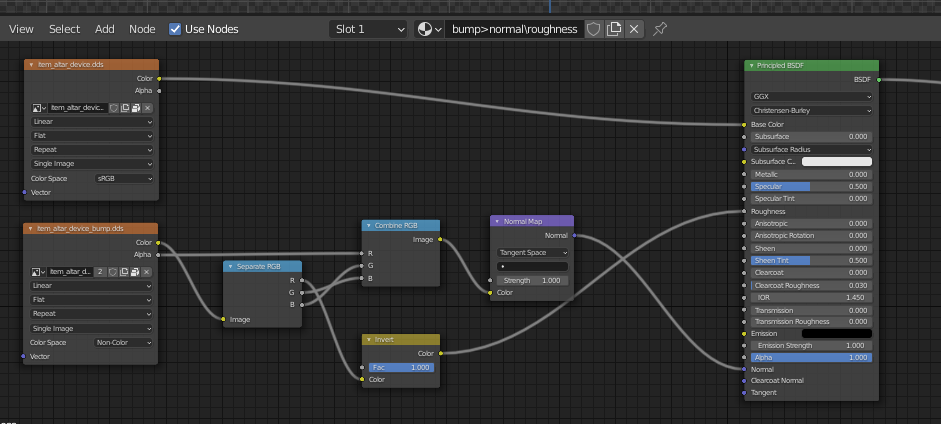

Setup Static Object in Blender
Need to know
- How to work in Blender
- How to work with Blender X-Ray Addon
- Familiarize yourself with the limitations and capabilities of the format *.object (because you may export to it more often than to *.ogf) to avoid errors
- Familiarize yourself with Static Object model type
About
Static Objects can be used to create levels and its collision. They will not interact with game physics and will not be dynamic.
Start
You must have a model downloaded or created by you.
You must have one UV map per mesh.
For my example, I’ll have a model with this UV map.

Texturing
Textures can be created in any program designed for this purpose, or you can simply download them.
In X-Ray Monolith only the following texture maps are used:
- Diffuse color (*.dds)
- Bump maps (*_bump.dds and *_bump#.dds)
Here you need to add your created textures in *.dds and *_bump.dds (if you have) format
As a result, in the Shader Editor our textures should look something like this:
our textures should look something like this:

Placement
First, the model itself will be set up. You can start by positioning the model over the origin in this way
(The “Drop It” addon for Blender is highly recommended for such actions)
Then apply the coordinates with Ctrl + A > All Transform.
This will allow us (if you make for example a model library or work in the SDK) to drag and drop the model on the surface.

Surface
Select our object and go to the Material Properties tab.
tab.
Here we see the name of our material and a list of X-Ray Engine: Material with lots of items.

The items we need for the model now are:
Shader
Choose Engine Shader for Static Object
Compile
Compile Shader; Here are descriptions of the settings that the level geometry compiler uses
Material
Choose Game Material for Static Object
Finish
Go to Object Properties .
.
In X-Ray Engine: Object select Static in the Type list.
This completes the setup of the Static Object. You can safely export it in the model format you need.